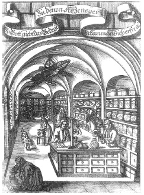

ŞEKİL 53. Barok çağında Alman eczanesi: “Aile reisi kitapları” diye adlandırılan kitaplar, eczacılık tarihi ile ilgili konuları da içermektedir. Kapsamlı bir ecza bilgisi, ilkin 1682’de, daha sonra da 1694’de Nürnberg’de basılmış olan 1000 sayfayı aşkın çok kapsamlı bir eser niteliğinde olan, Johann Christoph Thieme tarafından kaleme alınan Haus-, Feld-, Artzney-, Koch-, Kunst- und Wunder-Buch (Ev, Tarım, İlaç, Pişirme, Sanat ve Sihir Kitabı) adlı eserdir. Her iki baskıda da bakır üzeri oyma tekniğinde özdeş resimler yer almaktadır. Resimde tavanda asılı halde, kurutulmuş timsah iskeleti görülmektedir. Kimi grafiklerde eczane süsü olarak bunun yanı sıra testere balığı iskeleti de yer alır.50